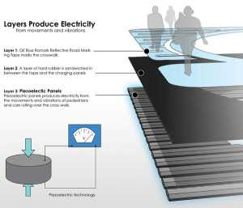
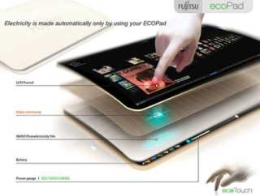

-
Generating Electricity from Crystals

-
Conceptual Design of Piezo Roads

-
Versatility of Piezo Electricity

-
Representation of Change of Shape to generate current

-
Practical Applications of Piezoelectricity


Importance
Barely noticed by the general public, piezoelectricity has become an innovation motor, which worldwide has initiated new markets with turnover of billions of dollars. The piezoelectric market covers a very wide range of technical applications; it is especially strong in the fields of information and communications, industrial automation, medical diagnostics, automation and traffic control, and in the defense industries.
- Layers in Piezo Roads
Similarly, the way piezoelectricity entered substantially into the market place was most unusual. Piezoelectricity was first discovered by the Curie brothers in 1880, but no until one century later did we realize the current avalanche of products developing in this market. Interesting questions are what happened during the period of long delay on one hand, and what catalyzed the present avalanche of progress on the other.From the perspective of solid-state physics, crystalline materials that become electrically polarized when subjected to mechanical stress and conversely change shape when under an applied electric field, namely piezoelectrics, certainly merit study. Technologically, however, the phenomenon only becomes interesting to the broader engineering community when it offers an effect large enough to usefully convert electrical power or signals into mechanical ones or vice-versa. This is the first essential condition, and there are also always a lot of additional needs like small conversion losses, temperature and long time stability, reproducibility, reliability, cost and other market needs.
Out of the family of such requirement for a given device, and the measured material properties, a figure of merit can be formulated. Now we have to compare these figures of merit with the corresponding ones for already existing systems in current applications.
- Design : PiezoPads by Fujitsu
Summarizing, concerning the multitude of piezoelectric materials and device applications existing already, today we may expect continuous futuredevelopment and fascinating new novel application areas. Above all we canexpect transfer of macrosystems into the micro and nano worlds, the search for lead free and environmentally more friendly highly active piezoelectrics will continue, and last but not least the piezoelectric effect in well textured or even single crystalline Pb(ZrTi)O3 like systems could surmount the already known strong piezo effects by an order of magnitude enlarging once more the already very broad current field of applications.